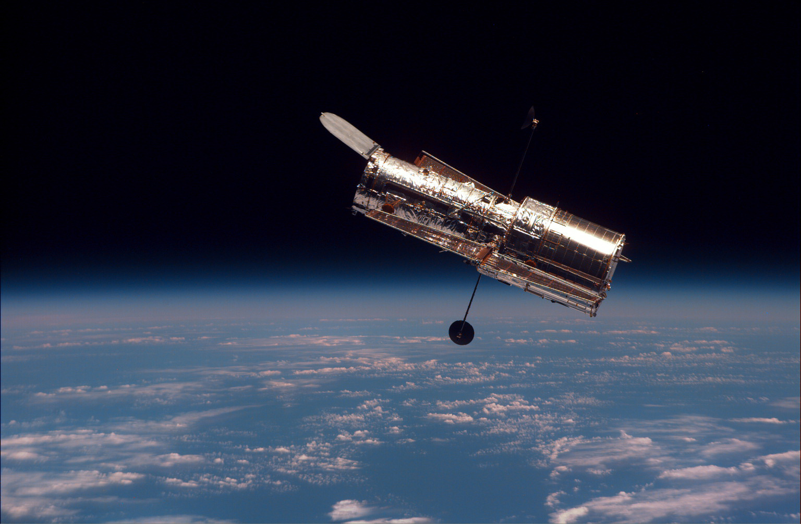
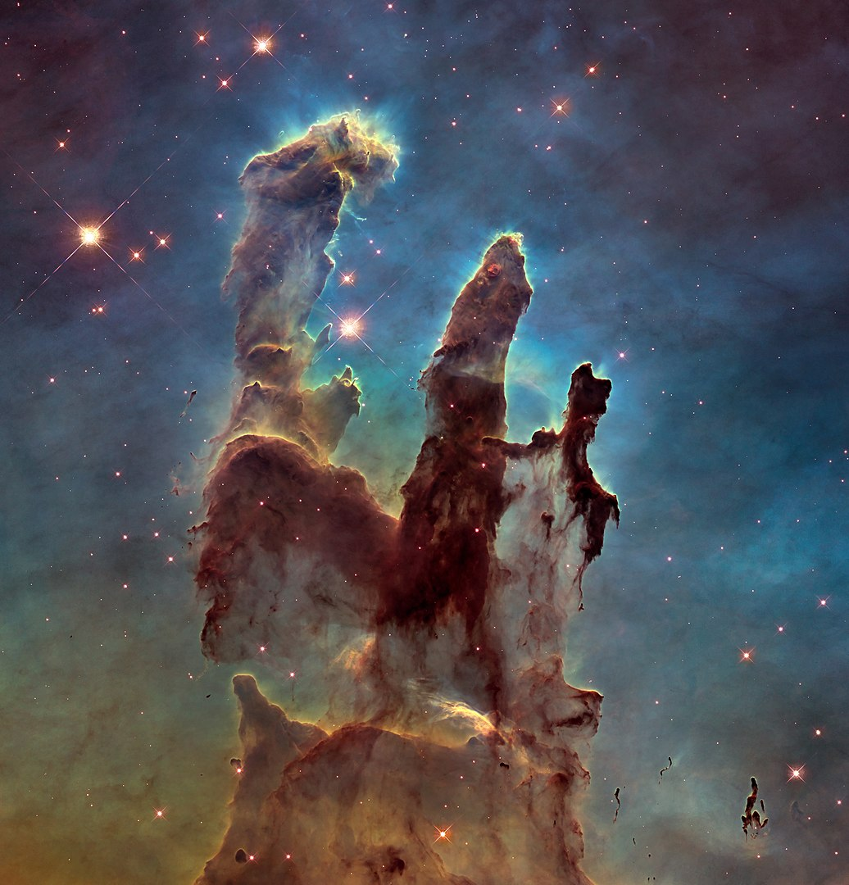
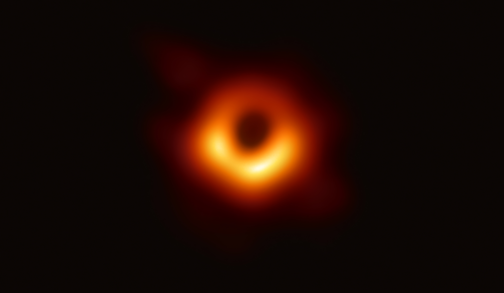

우주의 순간들
꿀교양이라는 소문에 듣기로 결심한 별과 우주 수업.
수강신청 장바구니에는 200명의 넘는 사람들이 이 수업을 담아 놨었다. 엄청난 경쟁률을 뚫고 수강신청에 성공했지만, 나는 과.알.못...... 뉴턴 법칙에 ‘모두들 알고 있는’이라는 수식어가 붙는 것을 보고 매우, 아주, 많이 당황했던 별과 우주 수업. 하지만 뜻밖에 우주의 모습에서 인문학적 감성을 느끼게 되고 우주에 관심을 가지는 계기가 되었다. 지금까지 내가 본 우주의 모습들 중 인상깊었던 사진 4개를 소개한다.
하나.

별들이 태어나는 창조의 기둥, 독수리 성운
지구로부터 약 7,000광년 떨어진 곳에서 찍은 사진 !
빛의 속도로 7000년을 가야 도착할 수 있는 이곳에서 새로운 별들이 탄생하고 있다. 허블 우주 망원경이 별이 만들어지는 현장을 처음으로 포착했다. 1995년 가시광선으로 촬영한 사진과 2015년 적외선으로 촬영한 사진이 있다. 적외선으로 찍은 사진에서는 먼지와 가스에 가려져 있던, 태어난지 십만년도 되지 않은 ‘아기별’의 모습이 더 잘 보인다.
둘.
이론으로만 존재했었던 블랙홀의 진짜 모습
죽은 별들 중 질량이 큰 별들은 강한 중력만 남게 되면서 블랙홀이 된다.
블랙홀의 중력은 빛도 빠져나갈 수 없기 때문에 블랙홀을 눈으로 관측하는 것은 어렵다. 그런데 2019년에 블랙홀이 빛을 흡수하면서 그 빛에 의해 생기는 블랙홀의 그림자를 발견한다. 볼 수 없는 것을 확인한 것이다! 인류 최초로 확인된 블랙홀은 이론과 일치하는 모습을 하고 있어서 더 화제가 되었다. 특히 영화 인터스텔라에 등장하는 블랙홀의 모습과 유사했다.
셋.

창백한 푸른 점
1977년 태양계 탐사를 목적으로 발사된 보이저 1호 탐사선
1990년 발렌타인데이. 태양과 지구의 거리의 40배, 해왕성이 있는 위치에서 탐사선의 방향을 뒤로 돌려 지구를 촬영한다. 스마트폰 스크린에 묻은 먼지만큼 작아보이는 이 점이 우리가 살고 있는 지구다.
‘창백한 푸른 점’은 코스코스의 저자로 유명한 천문학자 칼 세이건이 지은 제목이다.
이 사진은 지구가 우주 속 한 점의 빛, 하나의 픽셀, 햇빛에 떠다니는 먼지 라는 것을 보여준다. 나는 이 사진이 우리가 사는 세상의 현실적인 모습 보여주고 있다고 생각한다. 그리고 이 사진을 보고 있으면 어렵고 힘든 일들이 별거 아닌것처럼 느껴진다.
그리고 마지막 넷.

가장 먼 우주 허블 울트라 딥 필드
허블 우주 망원경은 천문학에서 중요한 사진들을 많이 찍어왔다.
이번 사진도 허블이 찍었다. 15일동안 우주의 어둠을 줌하고 줌하고 줌~~~해서 역사상 가장 먼 우주를 담아낸다. 130억 광년 이상 떨어진 우주의 모습을! 우주의 나이가 138억년임을 생각하면 인류가 본 우주의 모습 중 빅뱅에 가장 가까운 우주인 것이다. 그리고 그 먼 우주에서 출발한 빛이 130억년 지나 우리의 빛이 된 순간이다. 지구의 나이는 45억년, 지구가 존재하기도 전에 우리를 향해 비춰진 빛을 봤다는 것이 감동이었다.